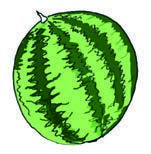
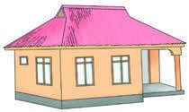
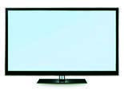

Identify picture 25 by viewing it, exploring a real object, or using a tactile graphic, then write, sign, type, or braille its name.
25.

Write or sign the names of the following things in your exercise book.
Identify picture 25 by viewing it, exploring a real object, or using a tactile graphic, then write, sign, type, or braille its name.
25.

Identify picture 26 by viewing it, exploring a real object, or using a tactile graphic, then write, sign, type, or braille its name.
26.

Identify picture 27 by viewing it, exploring a real object, or using a tactile graphic, then write, sign, type, or braille its name.
27.
